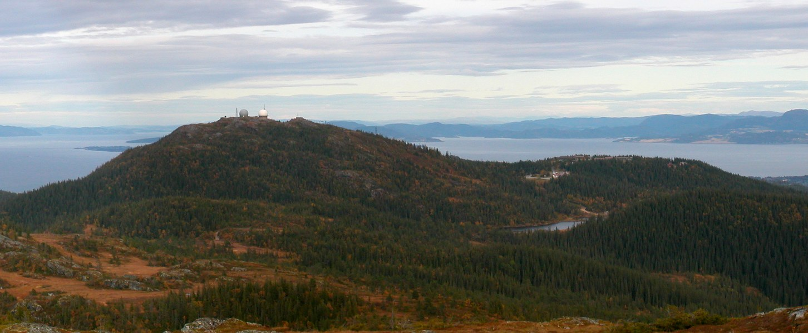

Bymarka er et skogsområde vest for Trondheim på 80 km², og er dermed Trondheims største og mest populære utfartsted. Den ligger på Byneshalvøya, og består hovedsakelig av Trondheim bymark, Leinstrandmarka og Bynesmarka. Området har et svært variert turterreng – fra tette granskoger via vekslene skog- og myrterreng til snaufjell over tregrensen (ca. 450 moh.). 11 km² ble vernet som Bymarka naturreservat i 2005.
Nyttige linker: http://www.bymarka.net/
http://skisporet.no/sortrondelag/bymarka